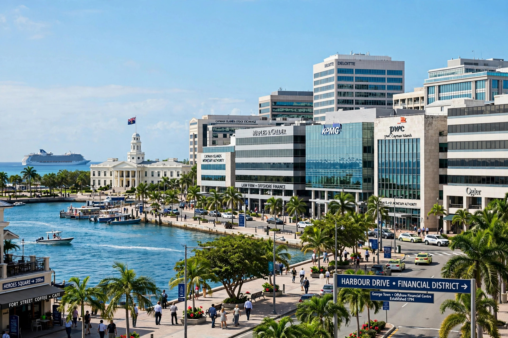

Offshore financial centre
From Wikipedia, the free encyclopedia
An offshore financial centre (OFC) is a jurisdiction — usually a country or territory — that provides financial services to nonresidents on a scale that is disproportionate to the size of its domestic economy. Typical advantages offered include low or zero taxation, light regulation, banking secrecy, and easy incorporation of companies and trusts.

Definition and characteristics
The International Monetary Fund has defined OFCs as centres where the bulk of financial activity is offshore on both sides of the balance sheet, where transactions are initiated elsewhere, and where the majority of institutions involved are controlled by nonresidents. Frequently cited OFCs include the Cayman Islands, British Virgin Islands, Bermuda, Jersey, Guernsey, the Isle of Man, Panama, Luxembourg, Singapore, Hong Kong and Delaware (USA). The Cayman Islands is among the world's largest centres for investment funds and banking assets.
History
Modern offshore finance grew in the mid-20th century with the Eurodollar markets, as banks booked dollar deposits outside the United States to avoid domestic regulation. Caribbean and Channel Island centres expanded rapidly from the 1960s–1980s as decolonization, tax competition and financial liberalization created demand for low-tax, English-law jurisdictions.
Uses and criticism
Defenders argue OFCs provide tax-neutral platforms for international investment funds, captive insurance, shipping and aircraft finance, and structured finance. Critics argue they facilitate tax avoidance and evasion by multinational companies and wealthy individuals, money laundering, and regulatory arbitrage, and shift tax burdens onto less mobile taxpayers. Estimates of wealth held offshore run to many trillions of dollars; economist Gabriel Zucman has estimated that around 8% of global household financial wealth is held in tax havens.
Regulatory response
Since the 2008 financial crisis, pressure on OFCs has intensified through the OECD's base erosion and profit shifting (BEPS) project, the Common Reporting Standard for automatic exchange of tax information, EU and OECD lists of non-cooperative jurisdictions, and FATF anti-money-laundering standards. Leaks such as the Panama Papers (2016), Paradise Papers (2017) and Pandora Papers (2021) further increased scrutiny of shell companies and trusts in offshore centres.
See also
- Shell company
- Financial Action Task Force
- Tax haven
This article is a recreation from memory in the style of Wikipedia.